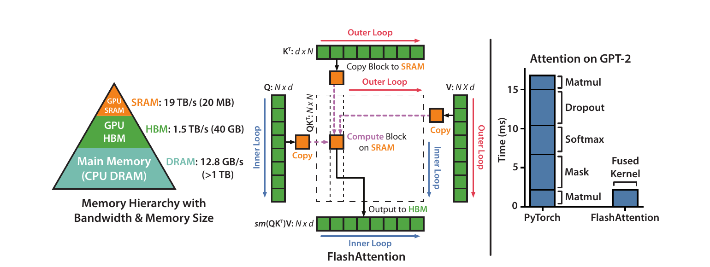
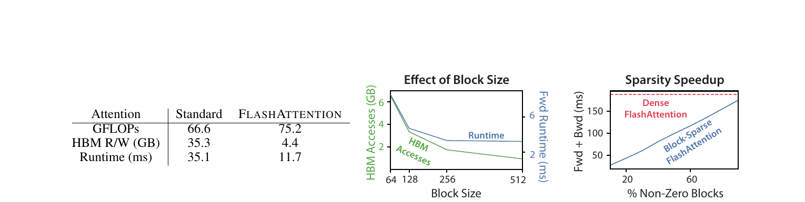
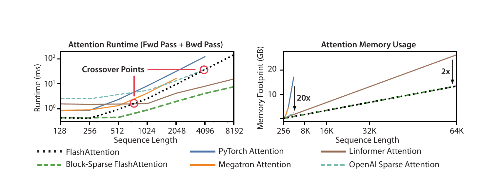

FlashAttention: Fast and Memory-Efficient Exact Attention with IO-Awareness
FlashAttention 不改變注意力的數學結果，而是改變資料在 GPU 記憶體階層中的旅程：以 SRAM 分塊、可合併的穩定 softmax 狀態與反向重算，避免在 HBM 實體化 \(N\times N\) 注意力矩陣，因而以更多局部計算換取更少昂貴 IO。
作者主張 演算法仍回傳精確的 \(\operatorname{softmax}(QK^\top)V\)，額外記憶體為 \(O(N)\)，且在指定 SRAM 範圍內大幅降低 HBM 存取。 §3.1–3.2 · PDF pp.4–5 · Algorithm 1
文章目錄
從 SRAM／HBM、Softmax 到 N×N 中間矩陣
只需要四個前置概念
- Scaled dot-product attention：每個 query 與所有 keys 形成分數，逐列 softmax 後再加權 values；本論文為簡化記號省略 \(1/\sqrt d\)，不影響資料流論證。
- HBM 與 SRAM：HBM 容量大但較慢，on-chip SRAM 容量小但快。論文以 A100 為例：HBM 40–80 GB、1.5–2.0 TB/s；每個 SM 的 SRAM 192 KB，估計約 19 TB/s。 §2.1 · PDF p.3
- memory-bound：若核心花在搬資料的時間多於算術，減少 FLOPs 未必縮短 wall-clock time；此時 arithmetic intensity（每搬一 byte 做多少運算）比 FLOPs 總數更有解釋力。
- kernel fusion 與 tiling：fusion 減少 kernel 邊界的 HBM 往返；tiling 則把工作集切小以重用 SRAM。難點是 softmax 跨越整列，不能單純逐塊獨立正規化。
為何既有方向仍留下空缺
許多高效 Transformer 以稀疏、低秩或其他近似，把理論計算複雜度降為線性或近線性；但不規則存取、額外 kernel 與未消除的 IO 可能使理論 FLOPs 優勢沒有轉成實際速度。另一些記憶體高效 exact attention 已知道可分塊重算，卻未從 GPU HBM↔SRAM 的 IO 複雜度出發共同設計資料流與核心。 Appendix A–B · Supplemental PDF pp.17–20
有了這些背景，下一個問題是：瓶頸不是算多少，而是中間矩陣被搬了多少次。
瓶頸不是算多少，而是中間矩陣被搬了多少次
症狀 → 根因 → 設計要求
| 觀察到的症狀 | 根本機制 | FlashAttention 的要求 |
|---|---|---|
| 序列變長時，注意力速度與記憶體迅速惡化。 | 標準實作在 HBM 實體化 \(S\) 與 \(P\) 兩個 \(N\times N\) 張量。 | 任何時刻只保留可放入 SRAM 的 tile，不讓完整 \(S/P\) 落地。 |
| 只把算式 fuse 起來仍要為 backward 保存中間值。 | 訓練反向需要 \(P\)；若把它寫到 HBM，主要 IO 又回來。 | 只存 \(O\) 與每列 normalizer，反向在 SRAM 內重算局部 \(S/P\)。 |
| 每個 key tile 各做 softmax 會得到錯誤結果。 | softmax 分母與最大值跨越整列，tile 彼此耦合。 | 維護可合併的 row max \(m\) 與 exponential sum \(\ell\)，並在最大值更新時重縮放舊輸出。 |
| 近似演算法 FLOPs 較少，wall-clock 卻不一定較快。 | GPU 執行時間取決於資料移動與硬體映射，不只算術次數。 | 把 HBM access 當一級成本，並以真實 runtime、memory 與端到端訓練驗證。 |
作者主張 FlashAttention 的設計目標不是改寫注意力函數，而是在 exactness、\(O(N^2d)\) 算術與 GPU 記憶體階層的約束下，最小化昂貴的 HBM access。 §3.1–3.2 · PDF pp.4–6
| 方法 | 是否 exact | 如何處理 \(N^2\) | 與 FlashAttention 的關係 |
|---|---|---|---|
| 標準 PyTorch / Megatron attention | 是 | 在 HBM 物化 score/probability；算術與 activation 皆二次方。 | FlashAttention 保留相同函數與二次方算術，但消除二次方 activation。 |
| Linformer、Performer 等近似 attention | 否 | 以低秩、kernelization 等降低算術複雜度。 | 長序列可能跨越 dense FlashAttention 的速度；但需接受近似與不同品質/實作條件。 |
| Reformer、Local / OpenAI Sparse Attention | 通常為稀疏近似 | 只計算部分 token pairs。 | block-sparse FlashAttention 把規則稀疏 mask 結合 IO-aware tiles，使 sparsity 較直接轉成 wall-clock。 |
| Rabe & Staats 的 memory-efficient exact attention | 是 | 分塊、重算，避免保存完整 attention。 | 概念相近；FlashAttention 增量更新單一輸出，backward 只重算 attention、不重算每塊暫時輸出，並把 GPU IO 複雜度與 fused kernel 列為一級目標。 Appendix B.5 · Supplemental PDF p.20 |
| Apex FMHA / 自動 fusion | 是 | 融合部分或全部操作，但 FMHA forward 仍把 attention matrix 存入 HBM。 | 補充實驗顯示 FlashAttention 對 NVFuser、Functorch、TVM 約快 2–3×；相對 FMHA 在短序列的總前反向優勢較小。 Appendix E.5–E.6 · Supplemental PDF pp.27–28 |
分析 FlashAttention 並非發明 tiling、online softmax 或 checkpointing 中的任何單一概念；創新在於把這些構件依 GPU IO 成本重新組合，給出 exactness/IO 證明，並做到足以改變端到端模型訓練的 CUDA 實作。這是系統論文常見但重要的貢獻型態：新穎性位於跨層協同設計。
問題的限制已經清楚；接著要抓住作者最關鍵的轉念。
精確 Attention 不必付出標準 Attention 的 I/O 代價
先看結論
傳統實作把 score \(S=QK^\top\) 與 probability \(P=\operatorname{softmax}(S)\) 寫入 HBM；兩者都是 \(N\times N\)。FlashAttention 將 Q、K、V 切成能放入 on-chip SRAM 的小塊，在 SRAM 中完成 score、softmax、遮罩、dropout 與 \(PV\) 的融合計算，只把輸出與每列兩個 softmax 統計量寫回 HBM。反向傳播再從 Q、K、V 與統計量重算局部 score/probability，而不是讀回整張注意力矩陣。 §1 · PDF p.2 · Figure 1
{kind=link}

不變
模型語義：dense 版本是 exact attention，FLOPs 仍為 \(O(N^2d)\)，不是近似或線性注意力。
改變
資料流：不在 HBM 保存 \(S\) 與 \(P\)，而以 tile 為單位在 SRAM 中即算即消化。
關鍵交換
多算、少搬：反向重算增加 FLOPs，卻因 HBM 讀寫從 35.3 GB 降到 4.4 GB，使測試案例由 35.1 ms 降到 11.7 ms。 §3.2 · PDF p.6 · Figure 2
實際價值
把長上下文變成可訓練：實驗涵蓋 BERT、GPT-2、LRA、長文件分類與最長 64K 的 Path-256。
實驗事實 主論文報告 BERT-large 到目標精度的訓練時間由 20.0±1.5 分鐘降至 17.4±1.4 分鐘；GPT-2 small 在相同 18.2 perplexity 下由 HuggingFace 的 9.5 天降至 2.7 天；注意力記憶體隨序列長度呈線性成長。 §4.1 · PDF p.7 · Tables 1–2 §4.3 · PDF p.9 · Figure 3
分析 這篇論文的架構影響力來自一個可移植的系統觀念：對 memory-bound 核心，先追蹤最慢層級的位元組搬運，而非只比較 FLOPs。它把「exact attention 必然要存二次方中間張量」從模型假設改寫為實作選擇。
直覺成立後，再沿著一次完整執行看它如何落成系統。
Tiling、Online Softmax 與反向重算如何消掉落盤
先用一列 query 走完一次
想像一個 query row 的所有 keys 被切成三個 tiles。處理第一塊時，核心得到局部最大值、局部指數和與局部加權輸出；第二塊若出現更大的 score，不能把舊結果直接相加，而要先用新舊最大值差把舊累積量縮回同一尺度，再合併新塊。只要一路保存「截至目前的最大值 \(m\)」「截至目前的指數和 \(\ell\)」「已正規化的部分輸出 \(O\)」，掃完所有 tiles 就與整列一次 softmax 完全相同。
前向傳播：六個動作
- 依 SRAM 容量決定 tile：將 Q 切成 \(B_r\times d\)，K、V 切成 \(B_c\times d\)，讓 K/V、Q/O 與 score tile 能同時駐留 on-chip。
- 外圈固定一塊 K、V：由 HBM 載入 \(K_j,V_j\) 一次，接著遍歷所有 Q tiles，使 K/V 在 SRAM 被重用。
- 載入目前 Q 與狀態：取出 \(Q_i,O_i,m_i,\ell_i\)，在 SRAM 計算 \(S_{ij}=Q_iK_j^\top\)。
- 局部穩定 softmax：求 tile 的 row max \(\tilde m_{ij}\)、未正規化機率 \(\tilde P_{ij}=\exp(S_{ij}-\tilde m_{ij})\) 與 row sum \(\tilde\ell_{ij}\)。
- 線上合併：取 \(m_i^{new}=\max(m_i,\tilde m_{ij})\)，重縮放舊累積量和新 tile，再更新 \(\ell_i\) 與 \(O_i\)。
- 只寫小狀態回 HBM：輸出 block 與每列 \(m,\ell\) 寫回；完整 \(S\) 與 \(P\) 從未離開 SRAM。遮罩與 dropout 也在同一 CUDA kernel 完成。 §3.1 · PDF pp.4–5 · Algorithm 1
反向傳播：重算是優化，不是妥協
標準 backward 會讀取已保存的 \(P\) 並產生 \(dP,dS\) 等二次方中間量。FlashAttention 保存前向的 \(O,m,\ell\)，反向逐 tile 從 Q、K、V 重建 \(S_{ij},P_{ij}\)，當場計算梯度後丟棄。dropout 不保存 \(N\times N\) mask，而保存隨機數生成器狀態並重播。多出的算術發生在快速的 on-chip 路徑，省下的則是慢速 HBM 往返。 Appendix B.4 · Supplemental PDF pp.20–21 · Algorithm 4
Block-sparse 延伸
若 mask 以 tile 為單位標記零/非零，核心直接跳過零 blocks。假設非零 block 比率為 \(s\)，主要 IO 項會再乘上 \(s\)。此版本改變了注意力模式，因此是近似延伸；dense FlashAttention 本身仍是 exact。 §3.3 · PDF p.6 · Proposition 4
分析 真正不可少的組合是「可合併的 softmax 狀態 × SRAM tiling × fused kernel × backward recomputation」。少其中任一環，分別會失去 exactness、資料重用、跨 kernel IO，或重新保存二次方 activation。
目標函數沒有改
\(N\) 是序列長度、\(d\) 是每個 head 的維度。FlashAttention 改的是計算順序與存放位置，不是這個輸出。
Online softmax 的合併不變量
對某列已處理部分保存 \((m,\ell,O)\)，新 tile 的局部量為 \((\tilde m,\tilde\ell,\tilde P V_j)\)。合併時：
指數與向量的乘法逐列廣播。以新最大值 \(m'\) 為共同座標重縮放，確保數值穩定，也讓任意分塊次序最後得到同一個全列 softmax。
作者主張 Theorem 1 以歸納法證明 Algorithm 1 回傳精確的 \(\operatorname{softmax}(QK^\top)V\)，做 \(O(N^2d)\) FLOPs，輸入與輸出之外只需 \(O(N)\) 額外記憶體。 §3.1 · PDF p.5 · Theorem 1
IO 複雜度才是理論核心
\(M\) 是 SRAM 可容納的元素數。令 \(B_c=\Theta(M/d)\)，K/V 各元素約載入一次，而 Q/O 被掃過 \(T_c=\Theta(Nd/M)\) 次，故總 HBM access 為 \(\Theta(NdT_c)\)。
Theorem 2 對 forward 給出上述比較；Supplemental Theorem 5 對 backward 給出相同階。Proposition 3 再指出：對所有 \(d\le M\le Nd\) 同時成立時，不存在 HBM access 為 \(o(N^2d^2/M)\) 的 exact attention 演算法。 §3.2 · PDF pp.5–6 · Theorem 2 / Proposition 3
分析 這個 lower bound 的措辭要讀仔細：它排除的是「在整個 SRAM 範圍都漸近更好」的演算法，不是對每一個固定 \(M\) 都給出完全參數化的下界；作者明列後者為未來工作。
方法看似合理，真正的問題是：實驗有沒有把這條因果鏈撐起來？
更多 FLOPs 卻更快：Kernel、端到端與長序列證據
評估軸與控制條件
| 主張 | 測試方式 | 主要對照與判準 |
|---|---|---|
| C1：少搬 HBM 才是加速來源 | 固定 A100、batch 64、16 heads、\(d=64\)、序列 1024，比較 FLOPs、HBM R/W、前反向時間；再掃 block size。 | 標準 attention；若 FLOPs 增加但 HBM 與時間同降，支持 IO 機制。 §3.2 · PDF p.6 · Figure 2 |
| C2：核心優化能轉成端到端訓練加速 | BERT-large 到相同 72.0% MLM accuracy；GPT-2 以相同資料、步數與超參數比較 wall-clock 與 perplexity。 | NVIDIA MLPerf 1.1、HuggingFace、Megatron-LM；需同時維持品質。 Appendix E.1–E.2 · Supplemental PDF pp.25–26 |
| C3：省記憶體可換成更長上下文與更高品質 | GPT-2 context 1K→4K；RoBERTa 長文件 512→16K；Path-X/Path-256 16K/64K。 | perplexity、micro-F1、accuracy 與訓練時間；不是只量 kernel。 §4.2 · PDF p.8 · Tables 4–6 |
| C4：時間與記憶體趨勢可隨 \(N\) 延伸 | 單張 A100-40GB，含 dropout 與 padding mask，掃序列長度並量前向+反向與 footprint。 | PyTorch、Megatron、Linformer、OpenAI Sparse Attention 等。 §4.3 · PDF p.9 · Figure 3 |
| C5：block-sparse 延伸能把稀疏度化為速度 | 掃非零 blocks 比率，並在 LRA 比較五個任務的準確率與幾何平均 speedup。 | dense FlashAttention 與多個近似 attention；須避免只快但失準。 §4.1 · PDF pp.6–8 · Table 3 |
重要設定
- BERT：8×A100-80GB、FP16 Apex AMP O2、batch 448、LAMB、最多 7,100 steps；沿用 MLPerf train/validation split，同一初始化，10 次平均。
- GPT-2：8×A100-40GB、effective batch 512、400K steps、PyTorch AMP、OpenWebText；small/medium 皆與 baselines 使用相同 hyperparameters。
- 注意力 microbenchmark：單張 A100-40GB；主縮放圖含 dropout 與 padding mask。Figure 2 的機制測試則有 padding mask、無 dropout，讀圖時不可混為同一條件。
- LRA：ListOps、Text、Retrieval、Image、Pathfinder 五項；整體 speedup 是各任務 wall-clock speedup 的幾何平均。Performer 因混合精度不穩而用非 mixed precision，Local Attention 的實作不支援 FP16，跨方法時間比較因此並非完全同質。 Appendix E.3 · Supplemental PDF p.26
分析 評估最有說服力之處，是 C1 用 block size 操作 IO、C2 以品質約束檢查端到端速度、C4 看縮放曲線；三者分別排除「只是 FLOPs 少」、「只是 kernel 快」與「只在單一長度快」的替代解釋。
更多 FLOPs，反而更快
實驗事實 在序列 1024 的 A100 測試，標準 attention 與 FlashAttention 分別為 66.6 vs 75.2 GFLOPs、35.3 vs 4.4 GB HBM R/W、35.1 vs 11.7 ms。結果方向正是「多算 13%，少搬約 8×，總時間約快 3×」。 §3.2 · PDF p.6 · Figure 2
{kind=link}

端到端訓練是否維持品質
| 工作負載 | 基線 | FlashAttention | 品質約束 |
|---|---|---|---|
| BERT-large | MLPerf 1.1：20.0±1.5 min | 17.4±1.4 min（約 15% 較快） | 同達 72.0% MLM accuracy；10 runs |
| GPT-2 small | HuggingFace：9.5 days；Megatron：4.7 days | 2.7 days | 三者 perplexity 皆 18.2 |
| GPT-2 medium | HuggingFace：21.0 days；Megatron：11.5 days | 6.9 days | 三者 perplexity 皆 14.2 |
省下的記憶體能否轉成更長 context
| 模型／任務 | 短 context | 長 context | 結果 |
|---|---|---|---|
| GPT-2 small | Megatron 1K：ppl 18.2，4.7 days | FlashAttention 4K：ppl 17.2，3.6 days | context 4×，perplexity 改善 1.0，仍快約 30% |
| MIMIC-III | 512：micro-F1 52.8 | 16K：57.1 | +4.3 points |
| ECtHR | 512：micro-F1 72.2 | 8K：80.7 | +8.5 points；16K 回落至 79.2 |
| Path-X | 先前列舉的 Transformer baselines 未高於隨機 | dense FlashAttention，16K | 61.4% accuracy |
| Path-256 | 同上 | block-sparse FlashAttention，64K | 63.1% accuracy |
分析 摘要所稱長文件分類「平均提升 6.4 points」，可由 MIMIC 的 +4.3 與 ECtHR 的 +8.5 平均得到；但兩資料集並非每增加一級 context 都單調改善，ECtHR 16K 反而低於 8K。另須注意，GPT-2 正文稱改善 0.7 perplexity，但 Table 4 顯示的四捨五入數字 18.2→17.2 相差 1.0；本紀錄保留兩者而不替作者消除差異。較可靠的結論是「移除系統限制後，長 context 在這些任務上可帶來明顯提升」，而非「越長必然越好」。
縮放曲線在哪裡交叉
Figure 3 顯示 dense FlashAttention 在常見 128–2K 長度最高約比 PyTorch exact attention 快 3×；activation memory 隨序列長度近線性，對 exact baselines 最高省 20×。但 dense runtime 仍為二次方，近似方法在 512–1024 左右開始 crossover；到非常長序列，block-sparse 版本才同時呈近線性 runtime 並維持最低時間。 §4.3 · PDF p.9 · Figure 3
{kind=link}

作者主張 作者據此主張 FlashAttention 能在不改模型定義的情況下，把 IO 優化轉成訓練加速與長 context 品質；block-sparse 則作為把近似結構落成 wall-clock 優勢的 proof of concept。 §1 · PDF p.2 §3.3 · PDF p.6
論文真正做了哪些受控變因
| 變因 | 觀察 | 能支持的結論 | 不能支持的結論 |
|---|---|---|---|
| Block size：64→512 | HBM access 持續下降；forward runtime 先降，約 256 後趨平。 | tile 增大可減少 Q/O 掃描，直至算術或其他瓶頸接手。 | 不能推論「tile 越大永遠越快」；更大 tile 也可能放不進 SRAM。 |
| 非零 block 比率 | block-sparse runtime 隨非零比例近似線性上升。 | 跳過零 tiles 能把結構化 sparsity 轉成時間收益。 | 未證明任意 sparsity pattern、任意硬體都同樣有效。 |
| Sequence length | dense 與近似方法在 512–1024 附近出現速度 crossover；記憶體曲線分離。 | 最佳方法與 \(N\) 有關，不能只報單一長度。 | 圖中的 crossover 不是普遍常數；batch、head dim、mask 與硬體都可能移動它。 |
| Context length | GPT-2 perplexity改善；兩個長文件任務整體提升但不單調。 | 系統效率可解鎖先前放不下的模型配置。 | 不構成「長 context 本身是唯一因果來源」的全面證明。 |
§3.2–3.3 · PDF p.6 · Figure 2 §4.2–4.3 · PDF pp.8–9 · Figure 3
分析 本論文沒有一張「移除 online softmax／fusion／recomputation」的傳統元件 ablation，因為拿掉其中任一項會回到不同或不可行的演算法。最接近因果 ablation 的是 block-size sweep：它直接改變 HBM traffic，並觀察 runtime 同方向變化。
推測 若在另一代 GPU 上重做，block-size 最佳點與 crossover 應會隨 SRAM 容量、HBM bandwidth、tensor-core throughput 和 occupancy 改變；這需要實測，原文沒有跨架構 sweep。
數據回答了部分問題；剩下的是適用邊界與仍未被證明的部分。
Crossover、硬體依賴與 Block-sparse 的適用邊界
優點
- 語義保真：dense 版本精確重現標準 attention，讓系統優化與模型方法解耦。
- 理論與系統閉環：IO 複雜度、lower bound、HBM counter、kernel runtime、端到端訓練與下游品質形成多層證據鏈。
- 重新定義優化目標：以昂貴記憶體層的 bytes 為成本，合理解釋「FLOPs 多卻更快」。
- 可組合：同一資料流容納 mask、dropout，也能以 block mask 延伸到結構化稀疏。
作者明列的限制
作者主張 每種新 attention 需另寫低階 CUDA kernel，工程成本高，且實作未必能跨 GPU 架構移植；單 GPU 的 IO 分析也未納入多 GPU 間通訊。作者因此提出高階語言編譯到 IO-aware CUDA 與 multi-GPU IO 分析為未來方向。 §5 · PDF pp.9–10
解讀與部署風險
- 硬體外推：主要速度數字來自 NVIDIA A100；不能直接當成其他 GPU、精度、head dimension 或 inference workload 的保證。
- 問題沒有消失：dense attention 的算術與 runtime 漸近仍為二次方；線性的是額外 activation memory，不是全部成本。
- 比較異質：LRA 某些 baselines 不能使用同一精度；端到端數字也同時含框架、實作與訓練配置差異。
- Block-sparse 品質：它是近似方法，速度來自跳過 blocks；mask 選擇與任務品質必須另行驗證，不能把 dense exactness 自動延伸過去。
分析 論文最強的普遍性在「設計原則」，不是 2022 年某一組毫秒數。工程上應重測本機 roofline、tile、occupancy 與端到端占比，而不是把 A100 結果視為硬體無關常數。
把 IO-aware 思維帶到其他核心會發生什麼
對 AI Infra / inference engine 的啟示
分析 Prefill 與 decode 要分開看。本論文的核心適合大量 queries 同時參與的訓練與 prefill；autoregressive decode 每步 query 很短，瓶頸常轉向讀取長 KV cache。相同的 IO-first 思考仍成立，但應優化 KV 讀取、分頁與批次，而不能直接把本文 3× 訓練加速套到 decode。
分析 引擎 API 應把語義與 schedule 分離。只要 online reduction 維持同一不變量，tile 次序、融合範圍與記憶體配置可以依硬體調整。這為 compiler/autotuner 提供清楚介面：上層宣告 attention 語義，下層搜尋 \(B_r,B_c\)、pipeline 與 fusion。
分析 成本模型至少要有三層：FLOPs、HBM bytes、跨裝置 bytes。本文完成單 GPU 前兩層；cluster design 還要把 tensor/sequence parallel 帶來的互連傳輸納入，否則可能在單卡省 HBM、卻在網路上失去收益。
可延伸的研究問題
- 編譯器：能否從高階 attention 表達式自動推導 online reduction、backward recomputation 與硬體特定 tile，而非每個變體手寫 kernel？
- 跨 GPU：若 sequence/head 被分割，如何共同最小化 HBM、片上記憶體與 NVLink/網路 IO？
- 動態稀疏：block mask 若依輸入改變，metadata、load balance 與 kernel launch 開銷何時吃掉 sparsity 收益？
- 端到端調度：continuous batching 混合不同長度時，kernel tile 最佳化與 batch packing 是否衝突？
推測 若未來 inference engine 能把模型層級的 batch/sequence packing 與 kernel 層級 tiling 放進同一成本模型，FlashAttention 類演算法的收益可能不只來自單次 kernel，更來自減少 padding、改善 locality 與降低峰值記憶體後允許更大的有效 batch；這些效果需在真實 serving trace 上驗證。
- 如果演算法做了更多 FLOPs 卻更快，我們在 profiler 中需要哪些 counter 才能區分真正的 IO 因果機制與巧合？這篇工作的核心是演算法、CUDA 工程，還是成本模型？
- Proposition 3 為何只能說「不可能對所有 SRAM 大小都漸近更好」？若換 GPU、batch、head dimension 或只做 inference，Figure 3 的 crossover 預期怎麼移？
- Online softmax 的 \(m,\ell,O\) 不變量若加入 causal mask、dropout、bias 或不同精度，哪些仍成立，哪些需重新設計？
- GPT-2 4K 的品質提升應歸因於更長 context、token packing，還是有效訓練 tokens？需要什麼對照才能拆開？動態 block sparsity 又會增加哪些索引與負載均衡成本？
- 在 cluster 上，應如何把本文 HBM access 模型擴充成 HBM + NVLink/PCIe/RDMA 的分層成本模型，並與 continuous batching 的排程共同最佳化？
不變量、I/O 複雜度與關鍵圖表
| 正式標題 | FlashAttention: Fast and Memory-Efficient Exact Attention with IO-Awareness |
|---|---|
| 作者 | Tri Dao；Daniel Y. Fu；Stefano Ermon；Atri Rudra；Christopher Ré |
| 機構 | Stanford University；University at Buffalo, SUNY |
| 發表 | NeurIPS 2022，Volume 35，Main Conference Track |
| DOI | 10.52202/068431-1189 |
| 頁數 | 共 16 頁 |
| 任務定位 | 精確注意力的 IO-aware 演算法與單 GPU CUDA kernel；另含 block-sparse 近似延伸。 |
| 官方資源 | 主論文 PDF · 官方補充材料 |
書目資料以 NeurIPS 官方 proceedings 為準；作者全名與機構以論文首頁為準。
術語表
- HBM
- GPU 的高頻寬主記憶體；容量遠大於片上 SRAM，但資料往返較慢、成本較高。
- SRAM
- 位於 GPU streaming multiprocessor 附近的快速、小容量片上記憶體；tile 必須受其容量約束。
- IO-aware
- 把記憶體階層之間的讀寫量納入演算法設計與複雜度分析，而不只計數 FLOPs。
- Tiling
- 把矩陣切成能放入快速記憶體的 blocks，以提高資料重用並限制工作集。
- Online softmax
- 用可合併的 row max 與 exponential sum 分段計算全列 softmax，仍保有數值穩定與精確結果。
- Kernel fusion
- 在同一 GPU kernel 內串接 matmul、mask、softmax、dropout、matmul，避免中間結果反覆進出 HBM。
- Recomputation
- 反向時從輸入與小型統計量重算局部 attention，以額外算術換取不保存二次方 activation。
- Arithmetic intensity
- 每搬移一單位資料所做的算術量；用來判斷工作較可能 compute-bound 或 memory-bound。
- Exact attention
- 與標準 \(\operatorname{softmax}(QK^\top)V\) 相同的輸出；dense FlashAttention 屬此類。
- Block-sparse attention
- 以 tile 為單位跳過 mask 指定的區塊；可降低時間與 IO，但改變 dense attention，因此屬近似延伸。
重點索引與證據定位
- 整體資料流與 7.6× attention 核心速度：主論文 §1，PDF p.2，Figure 1。
- A100 記憶體階層與 memory-bound 背景：主論文 §2.1，PDF p.3。
- 前向 tiling、online softmax、exactness：主論文 §3.1，PDF pp.4–5，Algorithm 1 / Theorem 1。
- HBM IO 複雜度與下界：主論文 §3.2，PDF pp.5–6，Theorem 2 / Proposition 3。
- FLOPs、HBM R/W、runtime、block-size sweep：主論文 §3.2，PDF p.6，Figure 2。
- Block-sparse IO：主論文 §3.3，PDF p.6，Proposition 4。
- BERT/GPT-2 端到端結果：主論文 §4.1，PDF p.7，Tables 1–2。
- LRA accuracy 與 speedup：主論文 §4.1，PDF p.8，Table 3。
- 長 context 的 perplexity、F1 與 Path 結果：主論文 §4.2，PDF p.8，Tables 4–6。
- 序列長度縮放、crossover 與記憶體：主論文 §4.3，PDF p.9，Figure 3。
- CUDA、可移植性與 multi-GPU 限制：主論文 §5，PDF pp.9–10。
- 反向重算與 dropout mask 重播：官方 Supplemental Appendix B.4，PDF pp.20–21，Algorithm 4。
- BERT/GPT-2 完整設定：官方 Supplemental Appendix E.1–E.2，PDF pp.25–26。
- LRA、Path 與 mixed-precision 條件：官方 Supplemental Appendix E.3，PDF p.26。
- 與自動 fusion、Apex FMHA 比較：官方 Supplemental Appendix E.5–E.6，PDF pp.27–28。
閱讀時應把「dense FlashAttention 的 exact 結果」與「block-sparse 延伸的近似結果」分開；也要把 A100 上的實驗數字與可跨硬體延伸的 IO-aware 原則分開。